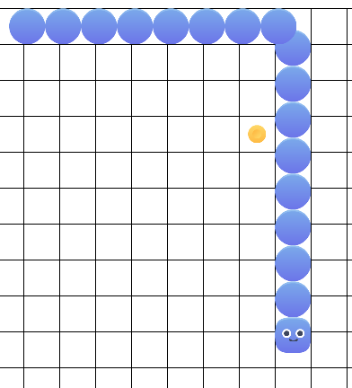

Our first pygame - tails follow head - part 8
Decisions about the Code
The direction is normalized. Well in this case -1 or 0 or 1. It cannot contain distance as we use directions in calculations that expect only 0 and +/- 1.
The end move position is calculated outside the class in the game loop, and the result is currently passed to the head. To move this code we need to store the tile size in the base class, everything else already belongs to the base class.
so this needs fixing
player.end_move_pos = (player.start_move_pos[0] + player.direction[0] * TILESIZE[0], player.start_move_pos[1] + player.direction[1] * TILESIZE[1])
We keep tile size as part of the gameobject
def __init__(self, speed, tilesize, img_file):
self.tilesize = tilesize
and at setup next move we add our code to the end of the function
self.end_move_pos = (self.start_move_pos[0] + self.direction[0] * self.tilesize[0], self.start_move_pos[1] + self.direction[1] * self.tilesize[1])
We need direction for the tail. we have start and end so we derive direction from that
def get_direction_from_start_end(self, start, end):
dx = end[0] - start[0]
dy = end[1] - start[1]
if dx > 0: dx = 1
if dx < 0: dx = -1
if dy > 0: dy = 1
if dy < 0: dy = -1
return (dx, dy)
It’s possible we could make use of this in other game objects, so we add our code in our game objects class for now.
We also need to tell the tail piece what it is following and how to follow given a distance.
def set_obj_to_follow(self, obj):
self.object_to_follow = obj
def follow(self, dt_distance):
if (self.is_end_of_move(dt_distance)):
self.start_move_pos = self.end_move_pos
self.end_move_pos = self.object_to_follow.start_move_pos
self.direction = self.get_direction_from_start_end(self.start_move_pos, self.end_move_pos)
else:
self.keep_moving(dt_distance)
Now we need to set the tail and set what it is following. We remove the following line.
player_tail.append(player.rect)
and replace it with
t = Tail(PLAYERNORMALSPEED, TILESIZE)
if (len(player_tail) > 0):
f = player_tail[len(player_tail) - 1]
t.rect.center = f.rect.center
t.end_move_pos = f.rect.center
t.start_move_pos = f.rect.center
t.object_to_follow = f
else:
t.rect.center = player.rect.center
t.end_move_pos = player.rect.center
t.start_move_pos = player.rect.center
t.object_to_follow = player
player_tail.append(t)
and finally in the tail blit we remove
if t != player.rect:
screen.blit(player_body.image,t)
and replace it with
screen.blit(t.image,t.rect)
if you were paying attention you should have noticed to remove the following lines
player_body = Tail(PLAYERNORMALSPEED, TILESIZE)
and
player.end_move_pos = (player.start_move_pos[0] + player.direction[0] * TILESIZE[0], player.start_move_pos[1] + player.direction[1] * TILESIZE[1])
If you play the game now you will see the tail does not follow correctly, so where is the bug? Well its not so much a bug (there is one though) as it is simplly leaving off the end of move.
if we fix the bug right away we stray from the git repository. So I’m going to add that next commit here quickly.
remove the following - we are actually moving and adjusting the code
# move food and grow tail
if (player.rect.center == food_rect.center):
x = random.randrange(0, 20)
y = random.randrange(0, 14)
food_rect.center = (TILESIZE[0] * x + TILESIZE[0]/2) , (TILESIZE[1] * y + TILESIZE[1]/2)
replace the code we removed with the following
if eat_food(TILESIZE, player, food_rect):
and place the removed code in this function above the game loop … we will move it again to make the code easier to read.
def eat_food(TILESIZE, player, food_rect):
if (player.rect.center == food_rect.center):
x = random.randrange(0, 20)
y = random.randrange(0, 14)
food_rect.center = (TILESIZE[0] * x + TILESIZE[0]/2) , (TILESIZE[1] * y + TILESIZE[1]/2)
return True
return False
Now grab all that code under eat_food and make a function called grow_tail
def grow_tail(TILESIZE, PLAYERNORMALSPEED, Tail, player, player_tail):
t = Tail(PLAYERNORMALSPEED, TILESIZE)
if (len(player_tail) > 0):
f = player_tail[len(player_tail) - 1]
t.rect.center = f.rect.center
t.end_move_pos = f.rect.center
t.start_move_pos = f.rect.center
t.object_to_follow = f
else:
t.rect.center = player.rect.center
t.end_move_pos = player.rect.center
t.start_move_pos = player.rect.center
t.object_to_follow = player
player_tail.append(t)
and the calling code looks like
if eat_food(TILESIZE, player, food_rect):
grow_tail(TILESIZE, PLAYERNORMALSPEED, Tail, player, player_tail)
Ok back to Our bug.
Add the return True and return False to our move function. We will set a variable called move_start with the returned value so we know if we started a new move
def move(self, dt_distance, new_direction, def_direction, continuous):
direction = self.direction
if direction != (0,0) or new_direction != (0,0):
if (self.is_end_of_move(dt_distance)):
if (continuous and new_direction == (0,0)):
direction = def_direction
else:
direction = new_direction
self.setup_next_move(direction)
return True
else:
#keep moving we are not there yet
self.keep_moving(dt_distance)
return False
Our player move call and the tail move is now
# do we have a direction?
move_start = player.move(dt_distance,new_direction,def_direction,continuous)
for t in player_tail:
if move_start:
t.complete_move()
else:
t.follow(dt_distance)
So we added the knowledge of the end of move to the tail, lets see how that helps.

Great! It works, but we noticed a few things.
- food could generate below player
- if we went to the edge we would dissapear off the screen
- we could cross over body without injury.
Next post we’ll tackle the difficulty and simplicity of edge detection and handling.